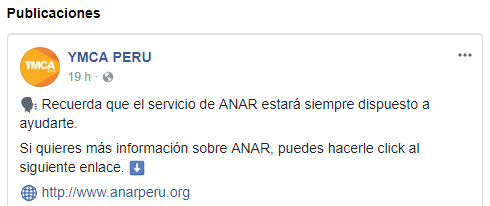
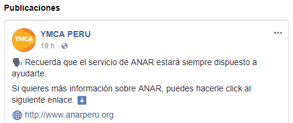

Newsfeed
-
 Lourdes Vilchez
Voluntariado en Orfanatos (Ayacucho) Existen dos tipos de Orfanatos en los que el participante puede apoyar. El primero es para niños abandonados o huérfanos de edades entre 1 semana de nacidos hasta 2 años de edad y el el orfanato para niños entre 2 a 17 años de edad, en el cual hay aproximadamente 70 niños y niñas. Los orfanatos proveen refugio, además brinda atención y alimentación a los niños. Los voluntarios podrán ayudar en diferentes áreas del orfanato como en el cuidado y atención de los niños, así como también podrán jugar con ellos, asistir en su labores escolares, ayudar en la preparación de sus comidas, alimentarlos, etc.
Lourdes Vilchez
Voluntariado en Orfanatos (Ayacucho) Existen dos tipos de Orfanatos en los que el participante puede apoyar. El primero es para niños abandonados o huérfanos de edades entre 1 semana de nacidos hasta 2 años de edad y el el orfanato para niños entre 2 a 17 años de edad, en el cual hay aproximadamente 70 niños y niñas. Los orfanatos proveen refugio, además brinda atención y alimentación a los niños. Los voluntarios podrán ayudar en diferentes áreas del orfanato como en el cuidado y atención de los niños, así como también podrán jugar con ellos, asistir en su labores escolares, ayudar en la preparación de sus comidas, alimentarlos, etc. -
 Franco
Ymca me permitió conocer cómo viven las familias del lugar, conocer sus costumbres, su manera de pensar y de ver el mundo; además me permitió entrar a un hospital, conocer al personal y poder trabajar con ellos en equipo; de esta manera pude colaborar desde adentro y entender la realidad del país, considerando que la vida allá es mucho más lenta y se necesita de paciencia para llevar cualquier proyecto a cabo.
Franco
Ymca me permitió conocer cómo viven las familias del lugar, conocer sus costumbres, su manera de pensar y de ver el mundo; además me permitió entrar a un hospital, conocer al personal y poder trabajar con ellos en equipo; de esta manera pude colaborar desde adentro y entender la realidad del país, considerando que la vida allá es mucho más lenta y se necesita de paciencia para llevar cualquier proyecto a cabo. -
ONU Perú